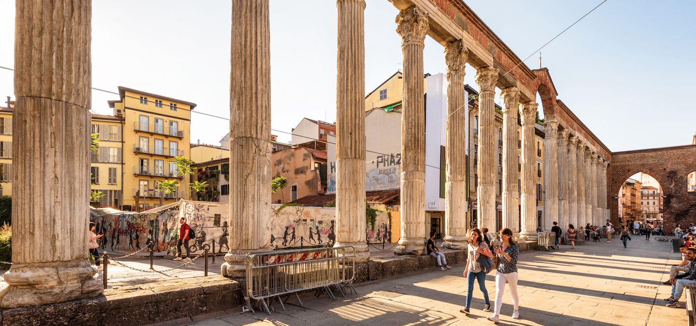
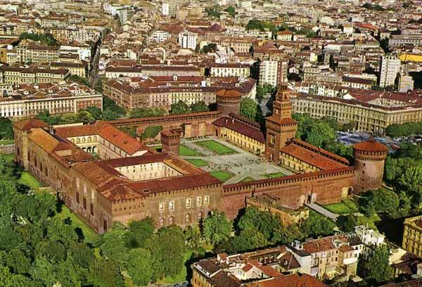
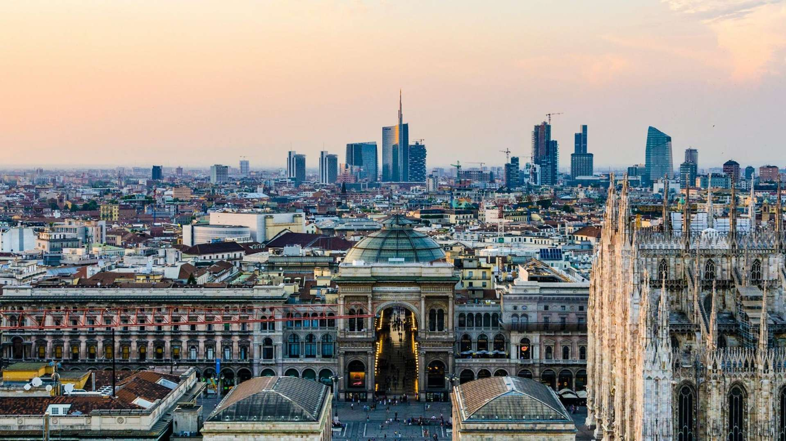

Milan and Lombardy, the region where the city is located, was ruled by Celts, Romans, Goths, Lombards, Spaniards and Austrians along the centuries. Milan became part of the Roman Empire in 222 B.C. and was a very active and important centre for a long time.
Milan lost much of its power as the Roman Empire declined, but the city had a beautiful period, in terms of wealth and culture, under the Visconti family, lords of Milan from 1277 to 1447.
Milan became part of the Roman Empire in 222 B.C. and was a very active and important centre for a long time. Milan lost much of its power as the Roman Empire declined, but the city had a beautiful period, in terms of wealth and culture, under the Visconti family, lords of Milan from 1277 to 1447.
Immediately afterwards, from 1450, it was ruled by the Sforza family, during the Renaissance period. Under the Sforza the city began its development. Francesco Sforza transformed the city into a powerful metropolis. It was during these years that the Castle (Castello Sforzesco) and the Cathedral (Duomo) were being built.
Another dominant person of this period was Ludovico Sforza, who improved the economy and the cultural heritage of the city. He was able to attract architects like Bramante and Leonardo da Vinci, transforming his court and the city into one of the most impressive and relevant cities in the history of the Italian culture. The city belonged to the Spanish and to the French monarchies and was under Napoleon’s empire from 1796 to 1814. In 1859 it became part of the new Kingdom of Italy.
Mussolini founded the fascist party in Milan in 1919. His followers created numerous strikes, harassed certain sectors of the population, like the liberals, and assaulted the worker’s newspapers, repressing the worker’s committees in Milan during the early years.
In 1944, anti-fascist groups in the north of Italy organized a northern Liberation Committee and Milan was freed from German troops in 1945 thanks to a general strike, which lasted several days. After World War II, Milan became a prosperous industrial city with a large working class.
Presently, Milan is the second largest city in Italy and the wider Milan metropolitan area has a population of over 8 million people. It is Italy’s main industrial, financial and commercial centre and along with Paris, is Europe’s fashion and design capital.
